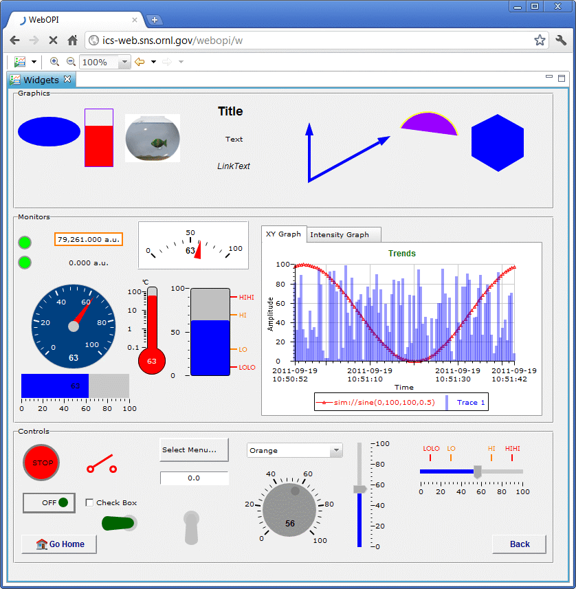

The dreams to bring your control system to web browser come true!
WebOPI aims to provide web access to Operator Interfaces (OPI) that were created in CSS BOY, the Best OPI, Yet. With WebOPI, people can seamlessly visit their OPIs from anywhere in the world at any time via a web-browser-equipped device such as a PC, laptop, tablet or smart phone. The WebOPI is built upon the Eclipse Rich Ajax Platform (RAP), which allows single sourcing between RCP and RAP. Most of the BOY widget code was reused for the WebOPI. OPIs displayed in a web browser look very similar to the original BOY OPIs. Most of BOY OPI functions are supported in WebOPI, including the support of Macros, Rules, JavaScript? and Python script. Without any additional work, you can easily deploy OPIs created in BOY on a Tomcat Web server by copying them to a pre-configured directory.

Only Tomcat Server has been tested. In principle, it can be deployed on all Servlet Containers that implement the Servlet API 2.3 through 3.0. This includes Tomcat, Jetty, Glassfish, JBoss and WebSphere.
Requirement: Java 1.6 and up. Apache Tomcat 7.0.x.
WebOPI is a Web Archive (WAR) file deployed on Tomcat server. If you do not have Tomcat server available, then the first step would be installing Tomcat server.
After Tomcat server installed, copy WebOPI WAR file (webopi.war) to
$CATALINA_HOME/webapps/ ($CATALINA_HOME represents the root of your Tomcat installation).
The preferences of WebOPI are configured in $(user.dir)/css_rap.ini.
On Tomcat, $(user.dir) is same as $CATALINA_HOME/webapps/.
If it is running inside Eclipse, $(user.dir) is the installation directory of Eclipse.
After WebOPI is properly configured, you can start Tomcat using
$CATALINA_HOME/bin/startup.sh. (You need to restart Tomcat server each time after you
make changes to the configuration.)
css_rap.ini follows the same format of plugin_customization.ini as in CSS product. Below is an css_rap.ini example, you can make corresponding modifications for your site.
#EPICS configuration org.csstudio.platform.libs.epics/auto_addr_list=false org.csstudio.platform.libs.epics/use_pure_java=true org.csstudio.platform.libs.epics/addr_list=127.0.0.1 192.168.1.2 org.csstudio.platform.libs.epics/max_array_bytes=160000 #WebOPI configuration org.csstudio.opibuilder/opi_repository=C:/path/BOY Examples/ org.csstudio.opibuilder/startup_opi=main.opi org.csstudio.opibuilder/mobile_startup_opi=mobile.opi org.csstudio.opibuilder/color_file=color.def org.csstudio.opibuilder/font_file=font.def org.csstudio.opibuilder/top_opis=http://www.xxx.com/xxx/Site/main.opi org.csstudio.opibuilder/opi_gui_refresh_cycle=200 org.csstudio.opibuilder/macros="N","North"|"W","West"|"SYS","LLRF"|"SubSys","HPM"
In above example, EPICS configuration items are same as in CSS. Most items in WebOPI configuration are same as in BOY, but there are there additional items:
Except opi_repository which must be an absolute path to a directory,
you can use either relative or absolute path for path items,
such as startup_opi, color_file and top_opis. If it is relative path,
it is relative to opi_repository.
If you directly put webopi.war under $CATALINA_HOME/webapps/, then the address to
access WebOPI would be http://your_site.com/webopi/. or http://127.0.0.1:8080/webopi/.
You can also rename webopi.war to whatever name you like, such as your_name.war, then the URL would
be http://your_site.com/your_name.
Once after you connected to above URL, it will automatically append /w to the URL.
Using above URL will open the startup_opi specified in css_rap.ini. To open other OPIs,
you can directly append ?opi=path/to/opi.opi to the URL. It can be either relative
or absolute path. For example:
http://your_site.com/webopi/w?opi=widgets/1_2_Image.opi
You can also append macros to the opi file as the macros input of the opi. For example:
http://your_site.com/webopi/w?opi=widgets/1_2_Image.opi|m1=hello|m2=I'm BOY
Macros are separated by |.
For mobile, you can replace /w with /m in the URL to open mobile_startup_opi
by default. For example: http://your_site.com/webopi/m
WebOPI also support standalone mode, in which there will be no toolbar and editor tab. See
figure below. To access OPI in this mode, you simply need to replace /w or /m
with /ws or /ms in the URL. For example:
http://your_site.com/webopi/ws

It also allows to use macros in URL, for example:
http://your_site.com/webopi/ws?opi=$(m)/myopi.opi
The macros are defined in the preference file with the item macros.
Here is the list of things that are not supported in WebOPI, please avoid to use these functions in your OPI if you want to deploy it on web.
Using shutdown.sh cannot fully shutdown tomcat sometimes, so you have to kill tomcat manually and
then start tomcat again. The command to find tomcat's pid is ps aux|grep tomcat